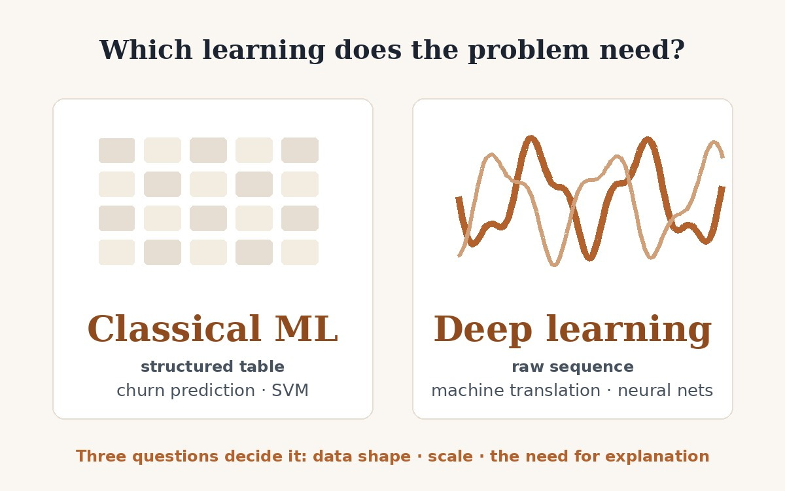

Machine Learning or Deep Learning: Matching the Method to the Problem
Introduction
Every applied AI project starts with an unglamorous decision that determines its budget, its timeline and its odds of working: does this problem need classical machine learning or deep learning? The expensive failure mode in industry is answering with prestige instead of analysis, reaching for a neural network because it sounds advanced, or settling for a simple model where only representation learning can cope.
This artifact is a written analysis that answers the question with evidence. It takes two problems from opposite ends of the spectrum, customer churn prediction and machine translation, pairs each with a documented production deployment, and argues the choice in both directions: why the right method fits, and why the other one fails there. The result is a three-question framework I now apply before proposing any model.

Artifact Description
Objective
Build a defensible framework for choosing between classical machine learning and deep learning, and prove it on real deployments rather than in the abstract, so the reasoning survives contact with a skeptical reviewer, a budget owner, or a regulator asking why a customer was flagged.
Process
- Selection: two examples chosen deliberately from opposite ends of the spectrum: churn prediction, where the data is a structured business table, and machine translation, where the data is raw language.
- Evidence: each example anchored to a documented real-world application: a peer-reviewed kernel support vector machine churn model for a telecom company (PLOS ONE), and Google’s 2016 switch from a decade of phrase-based translation to its Neural Machine Translation system, which cut errors by 55% to 85% and took over all Chinese-to-English production traffic, about 18 million translations per day.
- Both directions: for each case the report explains why the chosen approach fits and why the opposite approach is unsuitable there, because one-directional arguments are advocacy, not analysis.
- Scholarly grounding: the claim that classical models still beat neural networks on typical structured tables is backed by benchmark research from NeurIPS, not by intuition.
- Verification: every citation was checked against the live original source before publication, a discipline carried over from Artifact 1, where the same habit caught an AI research tool importing a neighboring country’s market data.
Tools and Technologies Used
- Primary-source research and verification: PLOS ONE, NeurIPS proceedings, and Google Research publications, each confirmed against the live source.
- Academic writing: APA 7 report structure, argumentation, and citation practice.
- Documented AI collaboration: Claude (Anthropic) assisted with locating sources, structuring the report, and building this page. The example selection, the suitability arguments, the corrections, and the final judgment are mine.
The Decision Framework
The portfolio version of this artifact is the tool itself: three questions that settle the choice before any code is written.
1 · What shape is the data?
A curated table whose columns already mean something favors classical models. Raw signal, text, pixels, audio, favors deep learning, because nobody can hand-write the features that matter.
2 · How much data and compute?
Moderate, imbalanced datasets reward careful feature work and simple models. Representation learning pays off only where data and hardware are effectively unlimited.
3 · Who needs an explanation?
If a person must act on the reason, a retention offer, an audit, a customer asking why, the model has to show its work. If output is judged purely on quality, opacity costs less.
How I use it
Before proposing any model, I answer the three questions in writing. Churn answers table, moderate, explanation owed, so classical machine learning wins. Translation answers raw sequence, effectively unlimited, quality only, so deep learning wins. When two of three point to the boring tool, the boring tool wins, and the budget says thank you.
Artifact Files
The complete analysis, with every claim cited and every source verified.
Value Proposition
Unique Value
Artifact 1 shows I can take an AI product from idea to deployed reality. This artifact shows the judgment that comes first: deciding what deserves to be built, with which method, and being able to defend the decision in both directions. The rarest sentence in applied AI is “deep learning is the wrong tool here, and here is the evidence,” and this analysis practices saying it where it is true.
Relevance
Teams building AI products in fintech and e-commerce live in churn-shaped data: structured tables, moderate scale, decisions that owe customers an explanation. This framework is directly usable in that world, and the full report demonstrates the research discipline behind it, primary sources, peer-reviewed evidence, and verification against the original before anything gets cited.
References
Full report: Machine Learning or Deep Learning (PDF, 7 pp.)
Churn case: Dao, V. T. S. (2022), Churn prediction in telecommunication industry using kernel support vector machines, PLOS ONE
Tabular benchmark: Grinsztajn, Oyallon & Varoquaux (2022), Why do tree-based models still outperform deep learning on typical tabular data?, NeurIPS
Translation case: Le & Schuster (2016), A neural network for machine translation, at production scale, Google Research